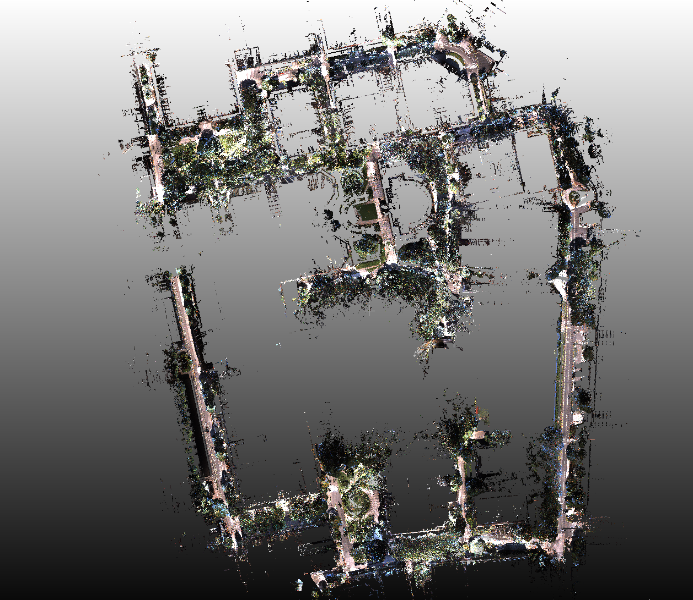
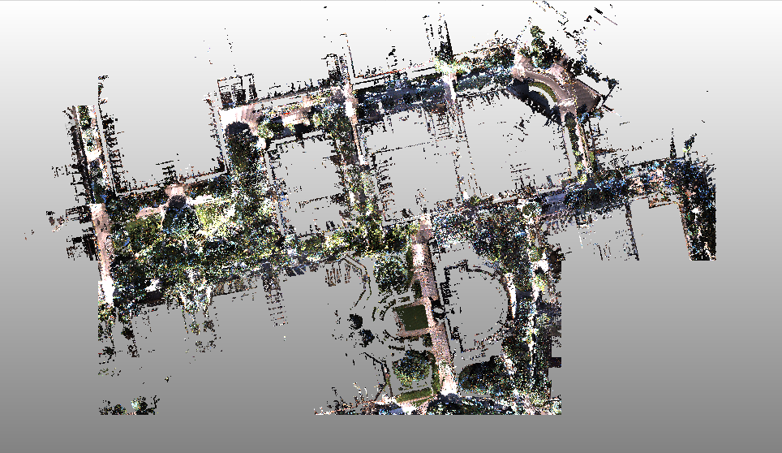

About the dataset
The point cloud data were scanned in September 2015 as part of the Graduate Program for Social ICT Global Creative Leaders (GCL), using the mobile mapping system of Aisan Technology Co., Ltd. The data cover the ~4 km road network of the entire Hongo campus of the University of Tokyo. The dataset was published in August 2020.
Coverage


Available formats
- Colored point cloud (PCD) — full campus.
- Colored point cloud (PCD) — partial area.
- Uncolored point cloud (PCD) — downsampled on a 5 cm grid.
- Uncolored point cloud (PCD) — downsampled on a 20 cm grid.
- Uncolored point cloud (e57) — e57 format.
Credits & sources
- Program
- Graduate Program for Social ICT Global Creative Leaders (GCL), University of Tokyo
- Scanning
- Aisan Technology Co., Ltd. (mobile mapping system)
- Scanned
- September 2015
- Published
- August 2020
Released under the Creative Commons Attribution 4.0 (CC BY 4.0) license. Please cite the source when you use the data.
Request access to the data
Please tell us a little about yourself and how you intend to use the data. After you submit, the download links will appear below.
Your download links
Thank you! Choose the file(s) you need below.
Please cite as: Graduate Program for Social ICT Global Creative Leaders (GCL), The University of Tokyo. UTokyo Hongo Campus Point Cloud Map [dataset]. Data acquired September 2015 with the mobile mapping system of Aisan Technology Co., Ltd. Published 2020.